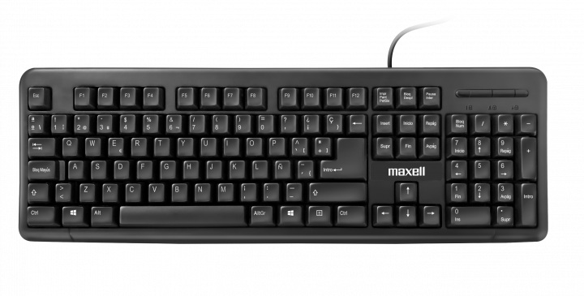
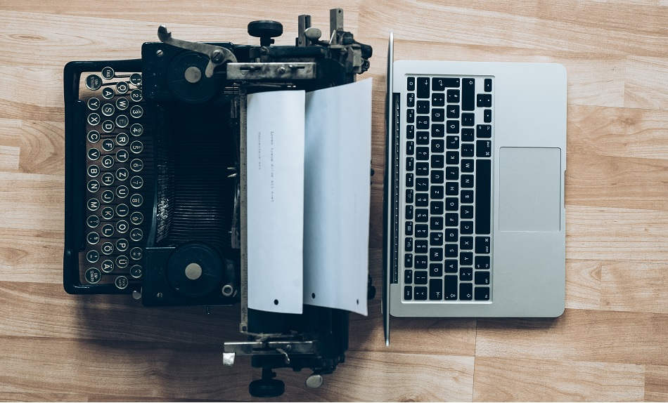

Beneficios que aporta el uso de teclados
- Precisión y control
- Entrada precisa de datos: El teclado permite ingresar información de manera exacta, lo que es crucial para tareas como la escritura de documentos, programación o entrada de datos numéricos.
- Control total sobre el texto: Los usuarios pueden manejar el texto de manera precisa (con teclas como retroceso, suprimir, flechas, etc.), lo que facilita la corrección de errores y el formato de los contenidos.
- Velocidad de entrada
- Rápida introducción de información: Con práctica, el teclado permite escribir y realizar comandos rápidamente, lo que resulta ideal para usuarios que necesitan manejar grandes cantidades de texto o datos.
- Atajos de teclado: Permiten realizar acciones específicas de manera más eficiente (como copiar, pegar, deshacer), lo que mejora la productividad.
- Facilidad de uso
- Interfaz conocida y estandarizada: La mayoría de las personas están familiarizadas con el uso del teclado, ya que ha sido un estándar en la interacción con computadoras durante décadas. Esto reduce la curva de aprendizaje.
- Compatibilidad universal: El teclado es compatible con casi todos los sistemas operativos y software, lo que lo convierte en una herramienta muy versátil.
- Versatilidad de aplicaciones
- Aplicaciones diversas: El teclado no solo es útil para escribir textos, sino que también es fundamental en áreas como la programación, edición de comandos en sistemas operativos (como Linux o terminales), e incluso para jugar videojuegos en PC.
- Combinación con otros dispositivos: En algunos casos, se combina con pantallas táctiles, lo que permite una interacción más rica y completa.
- Accesibilidad
- Facilita la interacción a usuarios con discapacidades: Hay teclados diseñados específicamente para personas con discapacidades motoras, visuales o cognitivas, lo que permite a más usuarios interactuar con ordenadores sin barreras importantes.
- Alternativas de uso para otras tecnologías: Aunque existen tecnologías como el reconocimiento de voz, el teclado sigue siendo una opción clave para usuarios que prefieren o necesitan una interfaz física.
- Interacción en entornos críticos
- Ambientes de trabajo que requieren silencio: A diferencia del uso de la voz o de pantallas táctiles, el teclado es una opción más silenciosa, lo que lo hace adecuado para entornos como oficinas compartidas o bibliotecas.
Breve historia del teclado y su evolución
La historia del teclado moderno comienza con la invención de la máquina de escribir, patentada por Christopher Latham Sholes en 1868, y comercializada por Remington en 1877. El diseño del teclado QWERTY, patentado en 1878 por Sholes y James Densmore, reorganizó las letras para evitar el atasco de las teclas, aunque ralentizó la escritura. Con el tiempo surgió el teclado Dvorak en 1936 para mejorar la fluidez, aunque el teclado QWERTY sigue siendo el diseño más utilizado.
Los avances tecnológicos, como la máquina de teletipos y el sistema Keypunch, marcaron la prehistoria del teclado en los primeros ordenadores. El primer uso de un teclado para la entrada de comandos en una computadora ocurrió en 1955 con el Whirlwind del MIT. En 1964, se introdujeron las primeras pantallas, facilitando la edición y uso de texto.
Durante los años 70, los primeros ordenadores personales como el Imsai y el Altair usaban teclados adaptados de máquinas de escribir eléctricas. En los años 80, IBM lanzó el famoso teclado modelo M, y los teclados de membrana se introdujeron en los años 90, coincidiendo con la llegada de Internet y portátiles.
En el siglo XXI, los teclados avanzaron con tecnologías inalámbricas como USB, Bluetooth y Wi-Fi. Hoy en día, conviven teclados físicos y digitales, con innovaciones como los teclados plegables, impermeables y de láser, aunque el teclado tradicional sigue siendo esencial.
Información adicional sobre el teclado
Si deseas conocer mas información acerca del teclado, simplemente clica aqui para acceder a dicha información